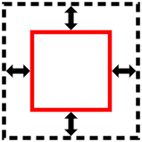
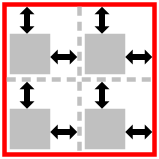

1. Introduction
This section is not normative.
CSS Levels 1 and 2 allowed for the alignment of text via text-align and the alignment of blocks by balancing auto margins. However, except in table cells, vertical alignment was not possible. As CSS3 adds further capabilities, the ability to align boxes in various dimensions becomes more critical. This module attempts to create a cohesive and common box alignment model to share among all of CSS.
Note: The alignment of text and inline-level content is defined in [CSS3TEXT] and [CSS3LINE].
Inspiration for this document:
- summary of a discussion for implementing <CENTER>
- Minutes from March 2008 F2F
- fantasai’s attempt to merge all alignment properties
1.1. Module interactions
This module adds some new alignment capabilities to the block layout model described in [CSS21] chapters 9 and 10 and defines the interaction of these properties with the alignment of table cell content using vertical-align, as defined in [CSS21] chapter 17. The interaction of these properties with Grid Layout [CSS3-GRID-LAYOUT] and Flexible Box Layout [CSS3-FLEXBOX] is defined in their respective modules.
No properties in this module apply to the ::first-line or
::first-letter pseudo-elements.
1.2. Values
This specification follows the CSS property definition conventions from [CSS21]. Value types not defined in this specification are defined in CSS Level 2 Revision 1 [CSS21]. Other CSS modules may expand the definitions of these value types: for example [CSS3VAL], when combined with this module, adds the initial keyword as a possible property value.
In addition to the property-specific values listed in their definitions, all properties defined in this specification also accept the inherit keyword as their property value. For readability it has not been repeated explicitly.
2. Overview of Alignment Properties
The box alignment properties in CSS are a set of 6 properties that control alignment of boxes within other boxes. They can be described along two axises:
- which dimension they apply to (inline vs. stacking), and
- whether they control the position of the box within its parent, or the box’s content within itself.
Note: This specification uses the terms “justify” and “align” to distinguish between alignment in the inline and stacking dimensions, respectively. The choice is somewhat arbitrary, but having the two terms allows for a consistent naming scheme that works across all of CSS’s layout models.
The following table summarizes the box alignment properties and the display types they can apply to.
| Common | Axis | Aligns | Applies to |
|---|---|---|---|
| justify-content | inline |
 content within element
(effectively adjusts padding)
content within element
(effectively adjusts padding)
|
block containers, flex containers, and grid containers |
| align-content | stacking | block containers, flex containers, and grid containers | |
| justify-self | inline |  element within parent (effectively adjusts margins) | block-level elements and grid items |
| align-self | stacking | flex items and grid items | |
| justify-items | inline |  items inside element (controls child items’ justify-self: auto) | grid containers |
| align-items | stacking | flex containers and grid containers |
The exact definition of these properties outside what’s what’s defined in Flexbox is still being worked out. This is a second Working Draft and is NOT STABLE.
Note: The *-items values don’t affect the element itself. When set on a flex container or grid container, they specify the interpretation of any justify-self: auto used on the items in the container element.
3. Alignment Values
All of the alignment properties use a common set of values, defined below.
- alignment subject
- The alignment subject is the thing or things being aligned by the property. For justify-self and align-self, the alignment subject is the margin box of the box the property is set on. For justify-content and align-content, the alignment subject is defined by the layout mode.
- alignment container
- The alignment container is the rectangle that the alignment subject is aligned within. This is defined by the layout mode, but is usually the alignment subject’s containing block.
3.1. Positional Alignment: the center, start, end, self-start, self-end, flex-start, flex-end, left, right, and stretch keywords
The positional alignment keywords specify a position for an alignment subject with respect to its alignment container.
The <item-position> set of values is used by justify-self and align-self to align the box within its alignment container, and also by justify-items and align-items (to specify default values for justify-self and align-self). The <content-position> set of values is used by justify-content and align-content to align the box’s contents within itself.
<item-position> = center | start | end | self-start | self-end |
flex-start | flex-end | left | right | stretch;
<content-position> = center | start | end | flex-start | flex-end | left | right;
Values have the following meanings:
- center
- Centers the alignment subject within its alignment container.
- stretch
- If the width or height (as appropriate) of the alignment subject is auto,
and its outer size is smaller than the alignment container,
its used value is increased to the length necessary to make the alignment subject’s outer size
as close to the size of the alignment container as possible,
while still respecting the constraints imposed by max-height/max-width.
The alignment subject is then aligned as per flex-start. (For layout modes other than flex layout, flex-start is identical to start.)
Should this value allow a fallback alignment, like the <content-distribution> values do?
- start
- Aligns the alignment subject to be flush with the alignment container’s start edge.
- end
- Aligns the alignment subject to be flush with the alignment container’s end edge.
- self-start
- Aligns the alignment subject to be flush with the edge of the alignment container corresponding to the alignment subject’s start side.
- self-end
- Aligns the alignment subject to be flush with the edge of the alignment container corresponding to the alignment subject’s end side.
- flex-start
- Only used in flex layout. [CSS3-FLEXBOX] Aligns the alignment subject to be flush with the edge of the alignment container corresponding to the flex container’s main-start or cross-start side, as appropriate. When used in layout modes other than Flexbox, this value computes to start.
- flex-end
- Only used in flex layout. Aligns the alignment subject to be flush with the edge of the alignment container corresponding to the flex container’s main-end or cross-end side, as appropriate. When used in layout modes other than Flexbox, this value computes to end.
- left
- Aligns the alignment subject to be flush with the alignment container’s line-left edge. If the property’s axis is not parallel with the inline axis, this value computes to start.
- right
- Aligns the alignment subject to be flush with the alignment container’s line-right edge. If the property’s axis is not parallel with the inline axis, this value computes to start.
3.2. Baseline Alignment: the baseline and last-baseline keywords
Baseline alignment is a form of positional alignment that aligns multiple alignment subjects within a shared alignment context (such as cells within a row or column) by matching up their alignment baselines.
The baseline alignment keywords are:
<baseline-position> = baseline | last-baseline
and are defined below:
- baseline
-
Indicates first-baseline alignment:
aligns one of the box’s first baselines
with the corresponding first baselines
of all the boxes in its baseline-sharing group.
If the alignment subject’s position is not fully determined by baseline alignment, the content is self-start-aligned insofar as possible while preserving the baseline alignment. (Content that has no first baselines is thus start-aligned.)
- last-baseline
-
Indicates last-baseline alignment:
aligns one of the box’s last baselines
with the corresponding last baselines
of all the boxes in its baseline-sharing group.
If the alignment subject’s position is not fully determined by baseline alignment, the content is self-end-aligned insofar as possible while preserving the baseline alignment. (Content that has no last baselines is thus end-aligned.)
These values give a box a baseline alignment preference: either "first" or "last", respectively.
When specified for align-content/justify-content, these values trigger baseline content-alignment, shifting the content of the box within the box, and may also affect the sizing of the box itself. See §4.1 Baseline Content-Alignment.
When specified for align-self/justify-self, these values trigger baseline self-alignment, shifting the entire box within its container, which may affect the sizing of its container. See §5.3 Baseline Self-Alignment.
If both baseline content-alignment and baseline self-alignment are specified in the same axis on the same box, only baseline self-alignment is honored in that axis; the content-alignment in that axis must be treated as self-start.
The previous paragraph is fairly arbitrary. Need some experience to make sure it’s the correct choice out of the two possibilities.
Note: The vertical-align property will also need a first-baseline value because per CSS2.1 for inline blocks, baseline is equivalent to last-baseline.
3.3. Distributed Alignment: the stretch, space-between, space-around, and space-evenly keywords
The distribution values are used by justify-content and align-content to distribute the alignment subjects evenly between the start and end edges of the alignment container. When the alignment subjects cannot be distributed in this way, they behave as their fallback alignment. Each distribution value has an associated <content-position> as a fallback alignment, but one can alternatively be explicitly specified in the property.
<content-distribution> = space-between | space-around | space-evenly | stretch
- space-between
- The alignment subjects are evenly distributed in the alignment container. The first alignment subject is placed flush with the start edge of the alignment container, the last alignment subject is placed flush with the end edge of the alignment container, and the remaining alignment subjects are distributed so that the spacing between any two adjacent alignment subjects is the same. Unless otherwise specified, this value falls back to start.
- space-around
- The alignment subjects are evenly distributed in the alignment container, with a half-size space on either end. The alignment subjects are distributed so that the spacing between any two adjacent alignment subjects is the same, and the spacing before the first and after the last alignment subject is half the size of the other spacing. Unless otherwise specified, this value falls back to center.
- space-evenly
- The alignment subjects are evenly distributed in the alignment container, with a full-size space on either end. The alignment subjects are distributed so that the spacing between any two adjacent alignment subjects, before the first alignment subject, and after the last alignment subject is the same. Unless otherwise specified, this value falls back to center.
- stretch
-
If the combined size of the alignment subjects is less than the size of the alignment container,
any auto-sized alignment subjects have their size increased equally (not proportionally)
so that the combined size exactly fills the alignment container,
and then clamped by their max-width/max-height constraints.
Unless otherwise specified, this value falls back to flex-start. (For layout modes other than flex layout, flex-start is identical to start.)
3.4. Overflow Alignment: the safe and true keywords
When the alignment subject is larger than the alignment container, it will overflow. Some alignment modes, if honored in this situation, may cause data loss: for example, if the contents of a sidebar are centered, when they overflow they may send part of their boxes past the viewport’s start edge, which can’t be scrolled to.
To help combat this problem, an overflow alignment mode can be explicitly specified. "True" alignment honors the specified alignment mode in overflow situations, even if it causes data loss, while "safe" alignment changes the alignment mode in overflow situations in an attempt to avoid data loss.
If the overflow alignment isn’t explicitly specified, the default overflow alignment is determined by the layout mode. Document-centric layout modes, such as block layout, default to "safe" overflow alignment, while design-centric layout modes, such as flex layout, default to "true" overflow alignment.
<overflow-position> = true | safe
- safe
- If the size of the alignment subject overflows the alignment container, the alignment subject is instead aligned as if the alignment mode were start.
- true
- Regardless of the relative sizes of the alignment subject and alignment container, the given alignment value is honored.
Transplant example 10 from flexbox.
The current grammar constructions allow combining safe and true with stretch for justify-self/align-self but not with stretch for justify-content/align-content. This is inconsistent.
4. Content Distribution: the justify-content and align-content properties
The content distribution properties justify-content and align-content control alignment of the box’s content within the box.
| Name: | justify-content, align-content |
|---|---|
| Value: | auto | <baseline-position> | <content-distribution> || [
|
| Initial: | auto |
| Applies to: | block containers, flex containers, and grid containers |
| Inherited: | no |
| Percentages: | n/a |
| Media: | visual |
| Computed value: | specified value, except for auto (see prose) |
| Animatable: | no |
Aligns the contents of the box as a whole along the box’s inline/row/main axis. Values other than auto are defined above. If both a <content-distribution> and <content-position> are given, the <content-position> provides an explicit fallback alignment.
- Block Containers:
-
The alignment container is the block container’s content box.
The alignment subject is the entire contents of the block, as a unit.
The align-content property applies along the block axis, but if a <content-distribution> is specified the fallback alignment is used instead. The justify-content property does not apply to and has no effect on block containers.
All values other than auto force the block container to establish a new formatting context. For table cells, the behavior of the auto depends on the computed value of vertical-align: top makes it behave as start, middle makes it behave as center, bottom makes it behave as end, and all other values make it behave as baseline. auto otherwise behaves as start.
- Multicol Layout:
-
The alignment container is the multi-column element’s content box.
The alignment subject is the column boxes, as a unit.
The align-content property applies along the block axis, but if a <content-distribution> is specified the fallback alignment is used instead. The justify-content property does not apply to and has no effect on multi-column elements.
auto behaves as start.
- Flex Containers:
-
auto computes to stretch.
The alignment container is the flex container’s content box. For justify-content, the alignment subjects are the flex items in each flex line; for align-content, the alignment subjects are the flex lines.
The align-content property applies along the cross axis. The justify-content property applies along the main axis, but since flexing in the main axis is controlled by flex, stretch behaves as flex-start.
See [CSS3-FLEXBOX] for details.
- Grid Containers:
-
auto computes to start.
The alignment container is the grid container’s content box. The alignment subjects are the grid tracks.
The align-content property applies along the block (column) axis, aligning the grid rows. The justify-content property applies along the inline (row) axis, aligning the grid columns.
See [CSS3-GRID-LAYOUT] for details.
4.1. Baseline Content-Alignment
The content of boxes participating in row-like layout contexts (shared alignment contexts) can be baseline-aligned to each other. This effectively increases the padding on the box to align the alignment baseline of its contents with that of other baseline-aligned boxes in its group.
The set of boxes that participate in baseline content-alignment depends on the layout model:
- Table Cells:
- A table cell participates in first (last) baseline content-alignment in either its row or column (whichever matches its inline axis) if its computed align-content is baseline (last-baseline).
- Flex Items:
- A flex item participates in first (last) baseline content-alignment in its flex line if its computed align-content is baseline (last-baseline) and its computed align-self is stretch or start (end).
- Grid Items:
- A grid item participates in first (last) baseline content-alignment in either its row or column (whichever matches its inline axis) if its computed align-content is baseline (last-baseline), and its computed align-self or justify-self (whichever affects its block axis) is stretch or start (end).
If a box spans multiple shared alignment contexts, it participates in first (last) baseline content-alignment within its start-most (end-most) shared alignment context along that axis.
When a box participates in first (last) baseline content-alignment its alignment subject is aligned to the start (end) edge of its alignment container and the minimum necessary extra space is added between its start (end) edge and the alignment subject to match its alignment baseline in that axis up to that of its baseline-sharing group. See §7.3 Aligning Boxes by Baseline. This increases the intrinsic size of the box.
4.2. Overflow and Scroll Positions
The content distribution properties also affect the initial scroll position, setting it to display the appropriate portion of the scrollable area. In other words, the scrollable area is aligned relative to the viewport as specified by the content distribution property.
This needs to be integrated with overflow-anchor, when the property exists, so that you get the same behavior whether an elements *starts out* overflowing, or is filled element-by-element.
5. Self-Alignment: Aligning the Box within its Parent
The justify-self and align-self properties control alignment of the box within its containing block.
5.1. Inline/Main-Axis Alignment: the justify-self property
| Name: | justify-self |
|---|---|
| Value: | auto | <baseline-position> | [ <overflow-position>? && <item-position> ] |
| Initial: | auto |
| Applies to: | block-level boxes, absolutely-positioned boxes, and grid items |
| Inherited: | no |
| Percentages: | n/a |
| Media: | visual |
| Computed value: | specified value, except for auto (see prose) |
| Animatable: | no |
Justifies the box within its parent along the inline/row/main axis: the box’s outer edges are aligned within its alignment container as described by its alignment value.
The auto keyword computes to itself on absolutely-positioned elements, and to the computed value of justify-items on the parent (minus any legacy keywords) on all other boxes, or start if the box has no parent.
- Block-level Boxes:
-
The justify-self property applies along its containing block’s inline axis.
The alignment container is the block’s containing block except that for block-level elements that establish a block formatting context and are placed next to a float, the alignment container is reduced by the space taken up by the float. (Note: This is the legacy behavior of HTML
align.) The alignment subject is the block’s margin box.The default overflow alignment is safe. In terms of CSS2.1 block-level formatting [CSS21], the rules for "over-constrained" computations in section 10.3.3 are ignored in favor of alignment as specified here and the used value of the offset properties are not adjusted to correct for the over-constraint.
This property does not apply to floats.
- Absolutely-positioned Boxes:
-
The justify-self property applies along its containing block’s inline axis.
When neither margin in this dimension is auto and neither offset property in this dimension is auto, values other than stretch cause non-replaced absolutely-positioned boxes to use shrink-to-fit sizing for calculating auto measures, and justify-self dictates alignment as follows:
The alignment container is the box’s containing block as modified by the offset properties (top/right/bottom/left). The alignment subject is the box’s margin box.
The default overflow alignment is safe. In terms of CSS2.1 formatting [CSS21], the rules for "over-constrained" computations in section 10.3.7 are ignored in favor of alignment as specified here and the used value of the offset properties are not adjusted to correct for the over-constraint.
The auto keyword is equivalent to start on replaced absolutely-positioned boxes, and equivalent to stretch on all other absolutely-positioned boxes. (This is because CSS 2.1 does not stretch replaced elements to fit into fixed offsets.)
- Table Cells:
- This property does not apply to table cells, because their position and size is fully constrained by table layout.
- Flex Items:
- This property does not apply to flex items, because there is more than one item in the main axis. See flex for stretching and justify-content for main-axis alignment. [CSS3-FLEXBOX]
- Grid Items:
-
The justify-self property applies along the grid’s row axis.
The alignment container is the grid cell. The alignment subject is the grid item’s margin box. The default overflow alignment is true.
5.2. Block/Cross-Axis Alignment: the align-self property
| Name: | align-self |
|---|---|
| Value: | auto | <baseline-position> | [ <overflow-position>? && <item-position> ] |
| Initial: | auto |
| Applies to: | block-level boxes |
| Inherited: | no |
| Percentages: | n/a |
| Media: | visual |
| Computed value: | specified value, except for auto (see prose) |
| Animatable: | no |
Aligns the box within its parent along the block/column/cross axis: the box’s outer edges are aligned within its alignment container as described by its alignment value.
The auto keyword computes to itself on absolutely-positioned elements, and to the computed value of align-items on the parent (minus any legacy keywords) on all other boxes, or start if the box has no parent.
- Block-level Boxes:
- The align-self property does not apply to block-level boxes (including floats), because there is more than one item in the block axis.
- Absolutely-positioned Boxes:
-
The justify-self property applies along its containing block’s inline axis.
When neither margin in this dimension is auto and neither offset property in this dimension is auto, values other than stretch cause non-replaced absolutely-positioned boxes to use shrink-to-fit sizing for calculating auto measures, and align-self dictates alignment as follows:
The alignment container is the box’s containing block as modified by the offset properties (top/right/bottom/left). The alignment subject is the box’s margin box.
The default overflow alignment is safe. In terms of CSS2.1 formatting [CSS21], the rules for "over-constrained" computations in section 10.6.4 are ignored in favor of alignment as specified here and the used value of the offset properties are not adjusted to correct for the over-constraint.
The auto keyword is equivalent to start on replaced absolutely-positioned boxes, and equivalent to stretch on all other absolutely-positioned boxes. (This is because CSS 2.1 does not stretch replaced elements to fit into fixed offsets.)
- Table Cells:
- This property does not apply to table cells, because their position and size is fully constrained by table layout.
- Flex Items:
-
The align-self property applies along the flexbox’s cross axis.
The alignment container is the flex line the item is in. The alignment subject is the flex item’s margin box. The default overflow alignment is true. See [CSS3-FLEXBOX] for details.
- Grid Items:
-
The align-self property applies along the grid’s column axis.
The alignment container is the grid cell. The alignment subject is the grid item’s margin box. The default overflow alignment is true.
5.3. Baseline Self-Alignment
Boxes participating in row-like layout contexts (shared alignment contexts) can be baseline-aligned to each other. This effectively increases the margins on the box to align its alignment baseline with other baseline-aligned boxes in its group.
The set of boxes that participate in baseline self-alignment depends on the layout model:
- Flex Items:
- A flex item participates in first (last) baseline self-alignment in its flex line if its computed align-self is baseline (last-baseline). See [CSS3-FLEXBOX] for details.
- Grid Items:
- A grid item participates in first (last) baseline content-alignment in either its row or column (whichever matches its inline axis) if its justify-self or align-self property (whichever matches its inline axis) computes to baseline (last-baseline).
If a box spans multiple shared alignment contexts, it participates in first (last) baseline self-alignment within its start-most (end-most) shared alignment context along that axis.
When a box participates in first (last) baseline self-alignment its alignment subject is aligned to the start (end) edge of its alignment container and the minimum necessary extra space is added between its start (end) edge and the alignment container to match its alignment baseline in that axis up to that of its baseline-sharing group. See §7.3 Aligning Boxes by Baseline. This may increase the intrinsic size contribution of the alignment subject.
6. Default Alignment
The align-items and justify-items properties set the default align-self and justify-self behavior of the items contained by the element.
6.1. Inline/Main-Axis Alignment: the justify-items property
| Name: | justify-items |
|---|---|
| Value: | auto | <baseline-position> | [ <item-position> && <overflow-position>? ] | [ legacy && [ left | right | center ] ] |
| Initial: | auto |
| Applies to: | block containers, flex containers, and grid containers |
| Inherited: | no |
| Percentages: | n/a |
| Media: | visual |
| Computed value: | specified value, except for auto (see prose) |
| Animatable: | no |
This property specifies the default justify-self for all of the boxes (including anonymous boxes) participating in this box’s formatting context. Values have the following meanings:
- auto
-
If the inherited value of justify-items includes the legacy keyword,
auto computes to the the inherited value.
Otherwise, auto computes to:
- legacy
-
This keyword causes the value to effectively inherit into descendants.
It can only be combined with the center, left, and right positions.
When justify-self:auto retrieves the value of justify-items,
only the alignment keyword, not the legacy keyword, is passed to it.
It exists to implement the legacy alignment behavior of HTML’s
<center>element andalignattribute.
Other values have no special handling and are merely passed to justify-self.
6.2. Block/Cross-Axis Alignment: the align-items property
| Name: | align-items |
|---|---|
| Value: | auto | <baseline-position> | [ <item-position> && <overflow-position>? ] |
| Initial: | auto |
| Applies to: | block-level elements |
| Inherited: | no |
| Percentages: | n/a |
| Media: | visual |
| Computed value: | specified value, except for auto (see prose) |
| Animatable: | no |
This property specifies the default align-self for all of the boxes (including anonymous boxes) participating in this box’s formatting context. Values have the following meanings:
Other values have no special handling and are merely passed to align-self.
7. Baseline Alignment Details
7.1. Determining the Baseline of a Box
The first baselines (and last baselines) of a box for a given axis are a set of baselines (alphabetic, central, etc.) nominally associated with the first (last) line of text within the box. The alignment baseline is one of these, usually the dominant baseline of the alignment container. (See alignment-baseline.) Note that boxes might not have baselines in a particular axis.
The first and last baselines of a box are determined differently based on the layout model, as follows:
- block containers
-
The first (last) inline-axis baselines of a block container
are generated from the dominant first (last) baseline of the first (last) in-flow line box in the block container,
or are taken from the first (last) in-flow block-level child in the block container that contributes a set of first (last) baselines,
whichever comes first (last).
If there is no such line box or child,
then the block container has no baselines.
For the purposes of finding the baselines,
in-flow boxes with a scrolling mechanisms (see the overflow property)
must be considered as if scrolled to their origin (final) position.
A block container has no block-axis baselines.
- tables
-
The first (last) inline-axis baselines of a table box are
the first (last) baselines of its first (last) row.
When finding the baselines of an inline-block, any baselines contributed by table boxes must be skipped. (This quirk is a legacy behavior from [CSS21].)
The first (last) block-axis baselines of a table box are the first (last) baselines of its first (last) column.
- table rows
-
If any cells in the row participate in baseline (last-baseline) alignment along the row axis,
the first (last) inline-axis baselines of the row
are generated from their shared alignment baseline
and the row’s first available font,
after alignment has been performed.
Otherwise, the first (last) inline-axis baselines of the row
are synthesized from the lowest and highest content edges of the cells in the row.
[CSS21]
A table row has no block-axis baselines.
- table columns
-
If any cells in the column participate in baseline (last-baseline) alignment
along the column axis (by having a writing mode perpendicular to that of the table),
the first (last) block-axis baselines of the column
are generated from their shared alignment baseline
and the column’s first available font,
after alignment has been performed.
Otherwise, the the first (last) inline-axis baselines of the row
are synthesized from the extreme content edges of the cells in the row.
[CSS21]
A table column has no inline-axis baselines.
- flex containers
- See Flex Baselines in [CSS3-FLEXBOX].
- grid containers
- See Grid Baselines in [CSS3-GRID-LAYOUT].
To generate baselines for a box from a single baseline, use the baseline table from the font settings and first available font of that box, and align that baseline set to the given single baseline.
To synthesize baselines from a rectangle (or two parallel lines), synthesize the alphabetic baseline from the lower line and the central baseline by averaging the positions of the upper and lower lines.
Note: The forthcoming Inline Layout Module will define synthesis rules for baselines other than alphabetic and central.
Maybe these things are wrong? CSS 2.1 is really weird about baseline alignment.
7.2. Baseline Alignment Terminology
A baseline-sharing group is composed of boxes that participate in baseline alignment together. This is possible only if they
- share an alignment context whose axis is parallel to their inline axis
- either have the same block flow direction and baseline alignment preference, or have opposite block flow direction and opposite baseline alignment preference (in other words, the baselines that want to align are on the same side of the alignment context).
Boxes share an alignment context along a particular axis when they are:
- table cells in the same row, along the table’s row (inline) axis
- table cells in the same column, along the table’s column (block) axis
- grid items in the same row, along the grid’s row (inline) axis
- grid items in the same column, along the grid’s colum (block) axis
- flex items in the same flex line, along the flex container’s main axis
Boxes in a baseline-sharing group are aligned to each other using their alignment baseline. This is the dominant baseline associated with the box that generates their shared alignment context on the first (last, for last-baseline alignment) formatted line. For example, in horizontal writing modes, specifying align-content: baseline on table cells in the same row will align the alphabetic baselines of their first formatted lines.
7.3. Aligning Boxes by Baseline
Given a set of boxes and their baselines that all belong to a single baseline-sharing group, the boxes are baseline-aligned as follows:
First, generate the alignment context’s baseline table from its first available font and overlay also the mirror of this baseline table by aligning their central baselines. These are the baseline grids to which the boxes will align.
Next, align all boxes by their specified alignment baseline to the alignment context’s baseline table or its mirror, whichever matches its line orientation. Unless otherwise specified (e.g. via the alignment-baseline property), the alignment baseline is the dominant baseline of the alignment context.
Position this aligned subtree within the alignment container according to the rules of the box alignment properties in effect.
8. Changes
Changes since the previous Working Draft include:
-
Added last-baseline keyword.
-
Improved details of baseline alignment.
-
Changed handling of auto/stretch for block-level and abspos elements in justify-self/align-self to be more powerful and less confusing.
-
Tightened up grammar combinations with <overflow-position> to be restricted to values that actually make sense.
-
Various clarifications.
Acknowledgments
Special thanks goes to Markus Mielke, Alex Mogilevsky, and the participants in the CSSWG’s March 2008 F2F alignment discussions.